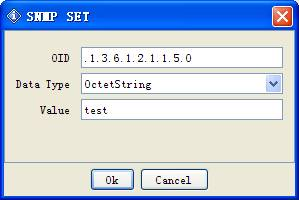
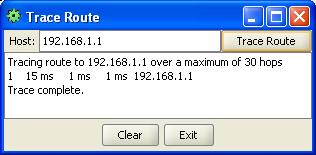
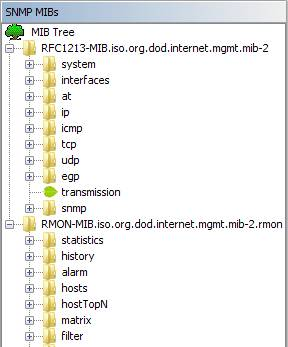

MIB Browser Version 12 User Guide
The iReasoning MIB browser is a powerful and easy-to-use tool powered by iReasoning SNMP API. MIB browser is an indispensable tool for engineers to manage SNMP enabled network devices and applications. The iReasoning MIB browser allows users to load standard, proprietary MIBs, and even some mal-formed MIBs. It also allows them to issue SNMP requests to retrieve SNMP agents' data, or make changes to agents. A built-in trap receiver can receive and process SNMP traps according to its rule engine.
Major features:
- Intuitive GUI
- Complete SNMPv1, v2c and v3 (USM and VACM) support
- Complete SNMPv3 USM support, including HMAC-MD5, HMAC-SHA1, HMAC_SHA2, CBC-DES, 3-DES, CFB128-AES-128, CFB128-AES-192 and CFB128-AES-256 algorithms
- Robust and powerful SMIv1/SMIv2 MIB parser
- IPv6 support
- Trap Receiver with rule engine to process traps and trigger actions if certain conditions are satisfied
- Trap Sender
- Log window to display application log and SNMP packets exchanged between browser and agents
- Table view for MIB tables
- SNMPv3 USM user management
- Port view for network interface cards
- Switch port mapper for mapping switch ports
- Performance graph tool for monitoring of numerical OID values
- Device snapshot
- Cisco device snapshot
- Ping and traceroute tools
- Network discovery tool
- SNMP Agents Comparison
- Bookmarks
- Runs on Windows, Mac OS X, Linux and other UNIX platforms
Requirements
- Windows, Mac OS X, Linux and other UNIX platforms.
Download and Run MIB Browser
1. Download MIB browser installer or zip file. On Windows, run setup.exe to install MIB browser. On Mac OS X, Linux and other UNIX platforms, unzip it to the desired directory.
2. Run MIB Browser:
- On Windows, click on the MIB browser icon to start browser.
- On Linux/UNIX, enter MIB browser home directory and run browser.sh to start browser.
- On Mac OS X (10.8 or later), download mibbrowser.pkg and run this command in terminal to install it to "/Applications" :
sudo installer -store -pkg mibbrowser.pkg -target /If trap receiver is bound to a port under 1024, open a terminal and run
sudo "/Applications/MIB Browser.app/Contents/browser.sh"
to start MIB browser with root privilege.On earlier versions of Mac OS X, download and unzip mibbrowser.zip, and enter ireasoning/mibbrowser directory and run browser.sh to start MIB browser.
On Linux/UNIX, if you login as a non-root user and need to run trap receiver at port 162 (or any port under 1024), start MIB browser using the following command:
Enterprise Edition
Trap receiver and watches functions run as a system service. Watches function supports action, which means you can configure actions (sending emails or traps) when a MIB object's value violates a pre-configured threshold.
On Windows platform, the service starts up automatically. On Linux/MAC OS X, you need to configure system to execute $INSTALL_DIR/lib/runserver.sh on startup.
The Browser GUI
Menu
-
File menu
Load MIB
Launch a file dialog for picking one or multiple MIB files. You need to hold CTRL key if you want to select multiple files.
MIB Modules
List properties of all loaded MIB modules.
Server Address (Enterprise Edition Only)
By default, MIB browser connects to a local server to get trap and watches data. However, you can change the server address so that it can get the data from somewhere else.
Open SessionOpen a previously saved session file.
Open Graph Data
Open a previously saved graph data file.
Save Session
Save current settings of open tabs to a session file, which can be opened later to restore tabs.
Exit
Exit browser.
-
Edit menu
Find in MIB Tree
Find a node in the MIB tree.
Find in Result Table
Find a string in the result table.
-
Operations menu
Get
Issue SNMP GET request against current agent.
Get Next
Issue SNMP GET-NEXT request against current agent.
Get Bulk
Issue SNMPv2c or SNMPv3 GET-BULK request against current agent. If the SNMP agent only supports SNMPv1, then this command will time out.
Set
Issue SNMP SET request against current agent.
The following window will show up:

Enter a new value in the "Value" field then click "Ok" button.
To set multiple variables, you can hold CTRL key and select multiple rows in the result pane, then choose SET operation.
Note:
1. For BITS data type, you need to use mathematical notation for a set of integers, that is, something like {1, 3, 8}.
2. The format for hexadecimal string is (0x[0-9A-Fa-f][0-9A-Fa-f] )+. For instance, 0x12 0xA1 0x30, or 0x12A130
Get Subtree
Issue SNMP GET-NEXT requests to get the whole subtree against current agent.
Walk
Do SNMP walk against current agent.
Table ViewShow MIB table data.
Clicking on this menu item will bring up a new table view window. But first, OID field needs to be an OID of a table or entry nodes. For example, it can be ifTable, ifEntry etc.
You can press CTRL key and select multiple tabular variables of the same table, then click "Table View". In this way, table view only shows the tabular variables you selected rather than the whole table.
Buttons on the toolbar of table view window:
Rotate button
Rotate table 90 degrees.
Refresh button
Refresh table now.
Export
Export table data to a CSV file.
Poll button
Refresh table periodically.
SNMP SET
Perform SNMP SET for selected table cells.
Create Row
Dynamically create a row. The table must support dynamic row creation, that is, it has a RowStatus or EntryStatus column.
Delete Row
Dynamically delete the selected row. The table must support dynamic row creation, that is, it has a RowStatus or EntryStatus column.
Graph
Plot graph for selected OID. If there is already one graph tab, you will be asked to re-use this tab or open a new tab.
Clicking on this menu item will bring up performance graph window. But first, OID field needs to be a numerical OID value or a table column node whose instances are numerical values. For example, it can be sysUpTime, ifOutOctets, and ifOutOctets.1, etc.
Buttons on the toolbar:
Export to CSV file
Export chart data to a CSV file.
Import from CSV file
Import data from a CSV file.
Save as PNG
Save chart data to a PNG format file.
Print
Print out the chart.
Restart
Restart plotting chart.
Pause
Pause plotting chart.
Switch
Switch between current view and global view.
Display trace
Display trace lines.
Grid
Display grid lines.
Rate
Display delta instead of raw values.
The polling interval can be changed by clicking the "Set" button.
-
Tools menu
Trap Sender
Open trap sender window:
This window allows user to send out SNMPv1/v2c traps or informs.
Trap settings can be bookmarked, so that you do not have to enter them again next time.
For SNMPv1/v2 trap nodes in the MIB tree, you can right click on them and select "Send Trap" context menu to bring up this window, and the information from the trap node will be used to fill out the default values.
Watches
Displays a table of variables being watched.
(Professional Edition)
(Enterprise Edition)
(Enterprise Edition. Watch's historical data)
Add Watch
Add watch item.
(Professional Edition)
(Enterprise Edition)
In enterprise edition, you can configure actions for each watch. Current actions include sending out emails or traps when the watch is in alarm or rearm states.
Port View
It shows input/output bandwidth utilization and error percentage of all ports of a node. The tooltips of pie charts show port properties. You can uncheck the checkbox near port's name to ignore its values.
The color of pie charts indicates severity levels, and it can be customized on the settings page.
Switch Port Mapper
It shows mapping of the devices connected to a managed switch, and similar to the port view, bandwidth utilization of ports is displayed.

Configure Settings
- Routers : IP and community of layer 3 routers, which will be used to retrieve MAC to IP mapping data.
- Chart Polling Interval : Data polling interval for plotting charts.
Device Snapshot
Show a snapshot view of available device data, including system info, interfaces, disks, processes, installed software, etc.
Cisco Device Snapshot
Show a snapshot view of Cisco devices.
If you have more OIDs to monitor, you can use the settings screen to add additional OIDs. The values of them will be shown in the "Basic Information" panel.
The utilization charts can have two types: meter or pie charts.
Log Window
Open application log window that displays application's log information. To clear the content, right click on this pane and select "Clear text" menu item.
Ping
Open ping tool window:
Enter an IP address and press "Ping" button. The results will be displayed in the text area.
Trace Route
Open traceroute tool window:

Enter an IP address and press "Trace Route" button. The results will be displayed in the text area.
Network Discovery
Open LAN discovery tool window:
Enter a subnet IP address such as 192.168.1.0 and then press "Start" button. It can discover all hosts in the subnet. And if SNMP agent is running on a host, its system table will be queried as well.
Manage SNMPv3 USM Users

The initial window displays a list of existing SNMPv3 users. You then can edit user's properties or delete it.
Compare Devices
Compare the SNMP values of two devices:
If the values of them are different, the font color is changed to blue:

Options
Open options window for customizing MIB browser:
General tab
SNMP Retries
Number of retries for SNMP queries.
SNMP Timeout
Timeout value for SNMP queries, in seconds.
Lenient Parsing
If checked, MIB parser will ignores some syntax errors in MIB files.
Logging Level
Logging level of the logger. If it is "DEBUG", the SNMP PDU will be printed in the Log window, but it may degrade the performance of the MIB browser.
Trap Port
The port number of trap receiver.
Max Token Number
The maximum number of tokens allowed in the description field of trap receiver. For instance, if the value is 6, then the message ".iso.org.dod.internet.mgmt.mib-2.interfaces.ifTable.ifEntry.ifAdminStatus.3" will be truncated to "¡.mib-2.interfaces.ifTable.ifEntry.ifAdminStatus.3".
Single Tree Root
If checked, MIB tree will have a single root node, that is, the .iso node. Otherwise, each MIB module has its own root node. MIB browser needs to be restarted for this option to take effect.
Agent's Character Encoding
For an SNMP agent on a non western language OS, it may return values in a different character encoding. You can change the charset in order to correctly display values returned from the agent.
Max Graph Data Count
Maximum number of data in memory of a graph.
Non Repeaters
Non repeaters value for SNMP GET-BULK requests.
Max Repetitions
Max repetitions value for SNMP GET-BULK requests.
Minimize to system tray
If checked, the MIB browser will be minimized to the system tray when you close it.
Single tree root

Each Module has its own root node
Default Values tab
This tab allows the user to set default properties for new SNMP agents.
Agent tab
This table stores the properties of visited SNMP agents. You can add or delete agents from this table.
For SNMPv1/v2c agents, values of User, Authentication Protocol, Authentication Password, Privacy Protocol and Privacy Password, are ignored. For SNMPv3 agents, values of Read Community and Write Community are ignored.
MIB Files tab

This table stores file names of loaded MIBs. You can add or delete MIBs from this table.
-
Bookmarks menu
This menu contains all your stored bookmarks. Bookmarks are links to OIDs and their associated operations that you use frequently. By adding an OID to your bookmarks, you can use it by simply clicking its name, instead of having to type it again.
Toolbar
- Address field
Enter the IP address and port number of SNMP agent, in the format of "ipAddress@port" or "ipAddress:port" (IPv4 only). The "@port" or ":port" are not necessary if the port number is 161.
-
Address Group
is a group of IP addresses, including their port numbers. It starts with "g " in the address field. Address group makes it much easier to perform SNMP
operations against multiple agents. An example:
192.168.1.1, 192.168.1.2:1611, 192.168.2.1
Other properties of an SNMP agent, such as community, SNMPv3 parameters, cannot be specified in the group address dialog. To change these properties, you can enter the IP address into the address field, and press "Advanced" button to change other properties. Then the IP address in the group will automatically reflect the changes.
-
Advanced button
Customize the properties of current SNMP agent, such as community names, SNMPv3 USM parameters, etc.
For an SNMPv3 agent, its engineID, authKey and privKey properties will be updated after first successful query.
-
Object identifier to be used for SNMP queries. This field is updated when the user selects a node in MIB tree or a row in the result table. You can also type new value directly in this field.
-
Operations
Select one of the SNMP operations from the list. Operation will be performed immediately when it is selected.
-
Go button
Press this button to perform the selected operation.
MIB Tree Pane
It is divided into two panes: Tree pane on the top and properties pane on the bottom.
-
Tree Pane
Display MIB trees. Right click on a node, a popup menu shows up. Depending on the node properties, if right clicking on a root node of a MIB module, popup menu includes three menu items: Find, Expand and Unload MIB. On other nodes, their respective popup menus have only two menu items: Find and Expand.
Table node
Table entry node
Read-write node
Read-create node
Index node
Leaf node, usually read-only
Table: Icon descriptions
Double click on a scalar node, its value will be queried against the agent specified on the toolbar. If double click on a tabular node (such as ifSpeed), then its subtree values will be queried against the agent.
-
Node Properties Pane
Display properties of selected node. Tooltips of second column show more information.
Result Pane
Display the result of SNMP queries in a table. If a octet string is displayed in hex format, double click on it to toggle the display mode.
Buttons on the right toolbar:
|
Stop button |
Stop pending SNMP queries. |
|
Clear Table button |
Clear the result table. |
|
Raw Data button |
Launch a new dialog window showing the raw results of SNMP queries. |
|
Find button |
Find strings in the result pane. |
|
Save button |
Save values in result pane to an XML file. |
|
Open button |
Load values from an XML file to the result pane. |
Trap Receiver
Main Window
Trap receiver can be opened from MIB browser window or started independently.
Trap receiver window is divided into two panels. The upper panel displays summaries of traps. The lower panel displays details of selected trap.
| Menu Items of Trap Receiver | |||||||||||||||
|---|---|---|---|---|---|---|---|---|---|---|---|---|---|---|---|
|
Trap Filter button |
Apply filter to all received traps. A trap can be blocked based on its IP address and OID. |
||||||||||||||
|
Start Trap Receiver button |
Start the trap receiver. It'll be grayed out if trap receiver is running. Trap receiver is not started automatically when the window is opened. |
||||||||||||||
|
Stop button |
Stop the trap receiver. |
||||||||||||||
|
Add Trap Rule |
Add a new rule for processing traps. If a row of trap table is selected, then the dialog will populate the fields with some data from the row. All rules will be applied for an incoming trap, except that a rule specifies that the trap should be ignored. Rules are ordered by their names. So you can modify rule's name to change its execution order. For example, rule A and B have the same conditions, but A sets severity to low and B sets severity to medium. Because B is applied after A, the final severity will be set to medium. |
||||||||||||||
| Screenshot of adding trap rule:
Rule Conditions:
Rule Actions:
| |||||||||||||||
|
Manage Rules |
Manage rules, including editing and deleting rules. |
||||||||||||||
|
Clear Table button |
Clear the content of the trap table. |
||||||||||||||
|
Export Table to CSV |
Export table data to a CSV file. |
||||||||||||||
|
Options |
Trap receiver's settings. |
||||||||||||||
Options
-
General Tab
Trap Port
The port number of trap receiver.
Forward Trap To
Forward traps to another trap receiver in SNMPv1 PDUs.
Save trap data to database
If enabled, received traps will be saved to the bundled database. Then they can be loaded again.
Show trap message window
If enabled, a trap message window will show up around system tray when a new trap is received.
Play sound
Play sound when a trap is received.
Execute command
Execute a command when a trap is received.
Tokens used in execute command $ip
IP address of trap originator
$severity
Severity as configured in the trap rule
$description
Description as configured in the trap rule
$oid
Trap OID
$ts
Timestamp value
$sp
Value of SNMPv1 trap's specific field
$vb.all
All variable bindings
$vb.n
The nth variable binding. For example, $vb.1 is the first variable binding, $vb.2 is the second one.
-
Email Template Tab (only available in enterprise edition)
If the email template is enabled, all emails sent out from the trap module will use the template.
Tokens used in template $ip
IP address of trap originator
$oid
Trap OID
$ts
Timestamp value
$sp
Value of SNMPv1 trap's specific field
$trap
The whole trap message in HTML format, as displayed in the lower panel of trap receiver.
$vb.all
All variable bindings
$vb.n
The nth variable binding. For example, $vb.1 is the first variable binding, $vb.2 is the second one.
-
SNMPv3 Trap Receiver Tab

This table stores the properties of SNMPv3 trap senders. You can add or delete items from this table.
SMTP Tab
This tab specifies whether to enable forwarding SNMP traps via email. If it is enabled, at lease the primary SMTP server should be configured. If the secondary SMTP server is also configured, it will be used for sending emails when the primary SMTP server fails.
Command Line Options
Command line tools are located at $INSTALL_DIR\bin directory.
-
MIB browser can be launched from the command line with the following options:
browser.bat -h (or ¨Chelp, -?)
Print usage
-h <h>
Specify the host name or IP address of SNMP agent.
-p <p>
Specify the port number of the SNMP agent. Default value is 161.
-v <1|2|3>
Specify the SNMP version number. Possible values are 1, 2, and 3.
-c <c>
Specify the SNMP community name. Default value is public.
-o <o>
Specify OID.
-a <a>
Specify the SNMP action. Possible values are (get|getnext|getsubtree|walk|gettable).
-f <filename>
Output CSV file name. Used with gettable action.
-s <filename>
Open a saved session on startup.
-w
Open watch tab on startup.
-
Command Line Graph Tool
graph.bat script is used to record an SNMP agent's values to a file, which can be opened by the MIB browser using the "File/Open Graph Data" menu.
Running graph.bat without any arguments will print usage and examples.
-
Command Line SNMP Tools
snmpget.bat script is used to issue SNMP GET request.
snmpgetnext.bat script is used to issue SNMP GET-NEXT request.
snmpset.bat script is used to issue SNMP SET request.
trap.bat script is used to send out SNMP traps.
Keyboard Shortcuts
|
CTRL-L |
Load MIB file |
|
CTRL-F |
Find a MIB node. |
|
CTRL-G |
Perform SNMP GET operation. |
|
CTRL-N |
Perform SNMP GET-NEXT operation. |
|
CTRL-E |
Perform Get-Subtree operation. |
|
CTRL-S |
Perform SNMP SET operation. |
|
CTRL-W |
Perform walk operation. |
|
CTRL-P |
Stop current operation. |
|
Enter |
If Operations or Go button have focus, pressing "Enter" key will repeat last operation. |
|
CTRL-T |
Table view |
|
CTRL-R |
Plot graph. |
|
CTRL-D |
Add to watches |
|
CTRL-O |
Open watches panel |
|
CTRL-I |
Open trap receiver panel |
About different editions
The free personal edition is intended exclusively for private use on a single workstation. You may copy the complete program package and pass it on to others for private use only. The free personal edition may not be used for commercial or professional purposes.
The professional edition has many more features and can be used for commercial or professional purposes.
The enterprise edition has more powerful trap receiver and monitoring features.
Features Table
| Feature | Personal Edition | Professional Edition | Enterprise Edition |
|---|---|---|---|
|
Runs on Windows, Mac OS X, Linux and other UNIX platforms |
|
|
|
|
Supports basic SNMP operations |
|
|
|
|
Table view for MIB tables |
|
|
|
|
SNMPv3 USM user management |
|
|
|
|
Trap Receiver |
|
|
|
|
Trap Sender |
|
|
|
|
Supports IPv6 |
|
|
|
|
Supports SNMPv1/v2c |
|
|
|
|
Supports loading any standard or private MIB |
|
|
|
|
Maximum number of MIBs loaded |
10 |
No restrictions |
No restrictions |
|
Free |
|
|
|
|
Supports SNMPv3 |
|
|
|
|
Watches |
|
|
|
|
Address Group |
|
|
|
|
Network discovery |
|
|
|
|
ICMP Ping tool |
|
|
|
|
ICMP Traceroute tool |
|
|
|
|
Performance graph |
|
|
|
|
Port view |
|
|
|
|
Switch port mapper |
|
|
|
|
Device snapshot |
|
|
|
|
Cisco device snapshot |
|
|
|
|
Compares devices |
|
|
|
|
Forwards traps via email |
|
|
|
|
Periodically refreshes MIB table |
|
|
|
|
Dynamic table row creation and deletion |
|
|
|
|
Rule engine for processing traps |
|
|
|
|
Run as service (Trap Receiver & Watches) |
|
|
|
|
Watch actions |
|
|
|
|
Email template |
|
|
|